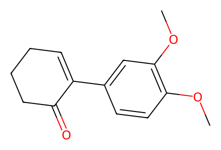
COc1ccc(C2=CCCCC2=O)cc1OC20 个分子、13 个反应事件、14 条操作记录、3 条路线。保留 HPLC 对映体比例与消旋对照；正文缺失，现有 SI 覆盖不等于全文完成。
完整 JSON · 逐步 CSV · 路线序列 · SDF · HRMS 核对
| 事件 | 分子连接 | 报告产率 | Canonical reaction SMILES |
|---|---|---|---|
| E01 | SI-1 + SI-2 → 6 | 6: 88% | COc1ccc(B(O)O)cc1OC.O=C1CCCC=C1I>>COc1ccc(C2=CCCCC2=O)cc1OC |
| E02 | 6 → rac-5 | rac-5: 95% | COc1ccc(C2=CCCCC2=O)cc1OC>>COc1ccc(C2=CCCC[C@H]2O)cc1OC |
| E03 | 6 → 5 | 5: 95% | COc1ccc(C2=CCCCC2=O)cc1OC>>COc1ccc(C2=CCCC[C@H]2O)cc1OC |
| E04 | 5 + A → 7 | 7: 74% | COC(=O)CNS(=O)(=O)c1ccc(C)cc1.COc1ccc(C2=CCCC[C@H]2O)cc1OC>>COC(=O)CN([C@H]1CCCC=C1c1ccc(OC)c(OC)c1)S(=O)(=O)c1ccc(C)cc1 |
| E05 | 7 → 7a | 7a: 85% | COC(=O)CN([C@H]1CCCC=C1c1ccc(OC)c(OC)c1)S(=O)(=O)c1ccc(C)cc1>>COc1ccc(C2=CCCC[C@@H]2N(CCO)S(=O)(=O)c2ccc(C)cc2)cc1OC |
| E06 | 7a → 4 | 4: 82% | COc1ccc(C2=CCCC[C@@H]2N(CCO)S(=O)(=O)c2ccc(C)cc2)cc1OC>>COc1ccc(C2=CCCC[C@@H]2N(CC=O)S(=O)(=O)c2ccc(C)cc2)cc1OC |
| E07 | 4 → 3 | 3: 67% | COc1ccc(C2=CCCC[C@@H]2N(CC=O)S(=O)(=O)c2ccc(C)cc2)cc1OC>>COc1ccc([C@@]23C=CCC[C@@H]2N(S(=O)(=O)c2ccc(C)cc2)C[C@@H]3O)cc1OC |
| E08 | 3 + acetic-anhydride → 8 | 8: 96% | CC(=O)OC(C)=O.COc1ccc([C@@]23C=CCC[C@@H]2N(S(=O)(=O)c2ccc(C)cc2)C[C@@H]3O)cc1OC>>COc1ccc([C@@]23C=CCC[C@@H]2N(S(=O)(=O)c2ccc(C)cc2)C[C@@H]3OC(C)=O)cc1OC |
| E09 | 8 → 9 | 9: 81% | COc1ccc([C@@]23C=CCC[C@@H]2N(S(=O)(=O)c2ccc(C)cc2)C[C@@H]3OC(C)=O)cc1OC>>COc1ccc([C@@]23C=C[C@@H](O)C[C@@H]2N(S(=O)(=O)c2ccc(C)cc2)C[C@@H]3OC(C)=O)cc1OC |
| E10 | 9 + iodomethane → 10a | 10a: 92% | CI.COc1ccc([C@@]23C=C[C@@H](O)C[C@@H]2N(S(=O)(=O)c2ccc(C)cc2)C[C@@H]3OC(C)=O)cc1OC>>COc1ccc([C@@]23C=C[C@@H](OC)C[C@@H]2N(S(=O)(=O)c2ccc(C)cc2)C[C@@H]3OC)cc1OC |
| E11 | 9 + iodomethane → 10b | 10b: 65% | CI.COc1ccc([C@@]23C=C[C@@H](O)C[C@@H]2N(S(=O)(=O)c2ccc(C)cc2)C[C@@H]3OC(C)=O)cc1OC>>COc1ccc([C@@]23C=C[C@@H](OC)C[C@@H]2N(S(=O)(=O)c2ccc(C)cc2)C[C@@H]3OC(C)=O)cc1OC |
| E12 | 10b + Eschenmoser-salt → 11 | 11: 73% | C=[N+](C)C.COc1ccc([C@@]23C=C[C@@H](OC)C[C@@H]2N(S(=O)(=O)c2ccc(C)cc2)C[C@@H]3OC(C)=O)cc1OC.[I-]>>COc1cc2c(cc1OC)[C@]13C=C[C@@H](OC)C[C@@H]1N(C2)C[C@@H]3OC(C)=O |
| E13 | 11 → 1a | 1a: 78% | COc1cc2c(cc1OC)[C@]13C=C[C@@H](OC)C[C@@H]1N(C2)C[C@@H]3OC(C)=O>>COc1cc2c(cc1OC)[C@]13C=C[C@@H](OC)C[C@@H]1N(C2)C[C@@H]3O |

COc1ccc(C2=CCCCC2=O)cc1OC
COc1ccc(C2=CCCC[C@H]2O)cc1OC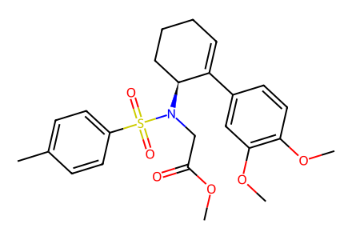
COC(=O)CN([C@H]1CCCC=C1c1ccc(OC)c(OC)c1)S(=O)(=O)c1ccc(C)cc1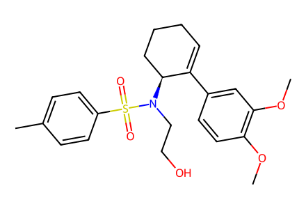
COc1ccc(C2=CCCC[C@@H]2N(CCO)S(=O)(=O)c2ccc(C)cc2)cc1OC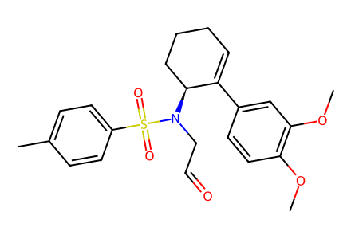
COc1ccc(C2=CCCC[C@@H]2N(CC=O)S(=O)(=O)c2ccc(C)cc2)cc1OC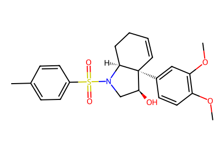
COc1ccc([C@@]23C=CCC[C@@H]2N(S(=O)(=O)c2ccc(C)cc2)C[C@@H]3O)cc1OC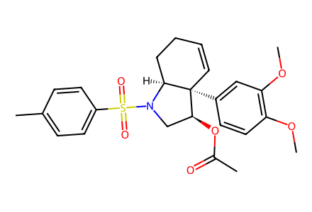
COc1ccc([C@@]23C=CCC[C@@H]2N(S(=O)(=O)c2ccc(C)cc2)C[C@@H]3OC(C)=O)cc1OC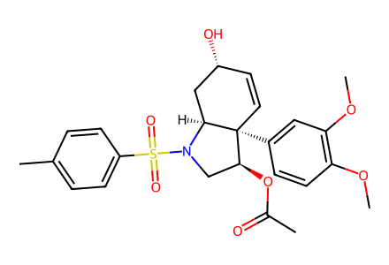
COc1ccc([C@@]23C=C[C@@H](O)C[C@@H]2N(S(=O)(=O)c2ccc(C)cc2)C[C@@H]3OC(C)=O)cc1OC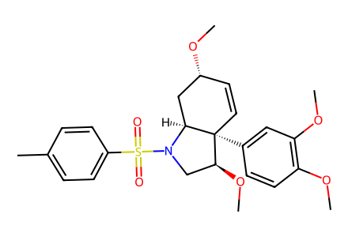
COc1ccc([C@@]23C=C[C@@H](OC)C[C@@H]2N(S(=O)(=O)c2ccc(C)cc2)C[C@@H]3OC)cc1OC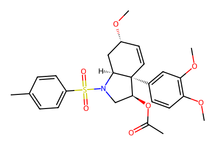
COc1ccc([C@@]23C=C[C@@H](OC)C[C@@H]2N(S(=O)(=O)c2ccc(C)cc2)C[C@@H]3OC(C)=O)cc1OC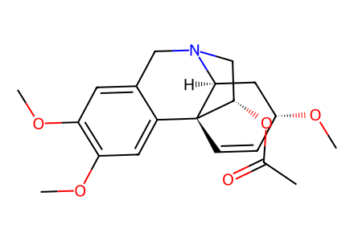
COc1cc2c(cc1OC)[C@]13C=C[C@@H](OC)C[C@@H]1N(C2)C[C@@H]3OC(C)=O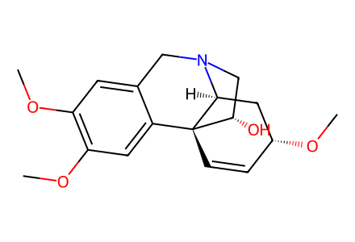
COc1cc2c(cc1OC)[C@]13C=C[C@@H](OC)C[C@@H]1N(C2)C[C@@H]3O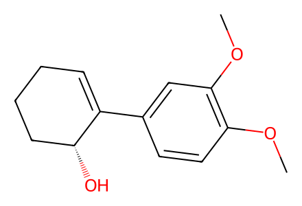
COc1ccc(C2=CCCC[C@H]2O)cc1OC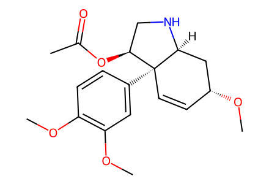
COc1ccc([C@@]23C=C[C@@H](OC)C[C@@H]2NC[C@@H]3OC(C)=O)cc1OC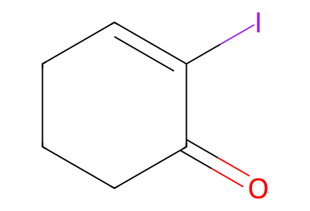
O=C1CCCC=C1I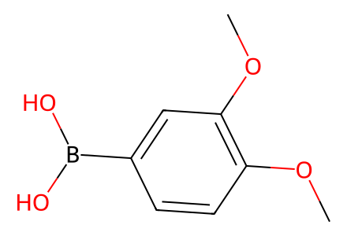
COc1ccc(B(O)O)cc1OC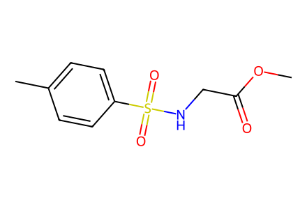
COC(=O)CNS(=O)(=O)c1ccc(C)cc1
CC(=O)OC(C)=O
CI
C=[N+](C)C.[I-]